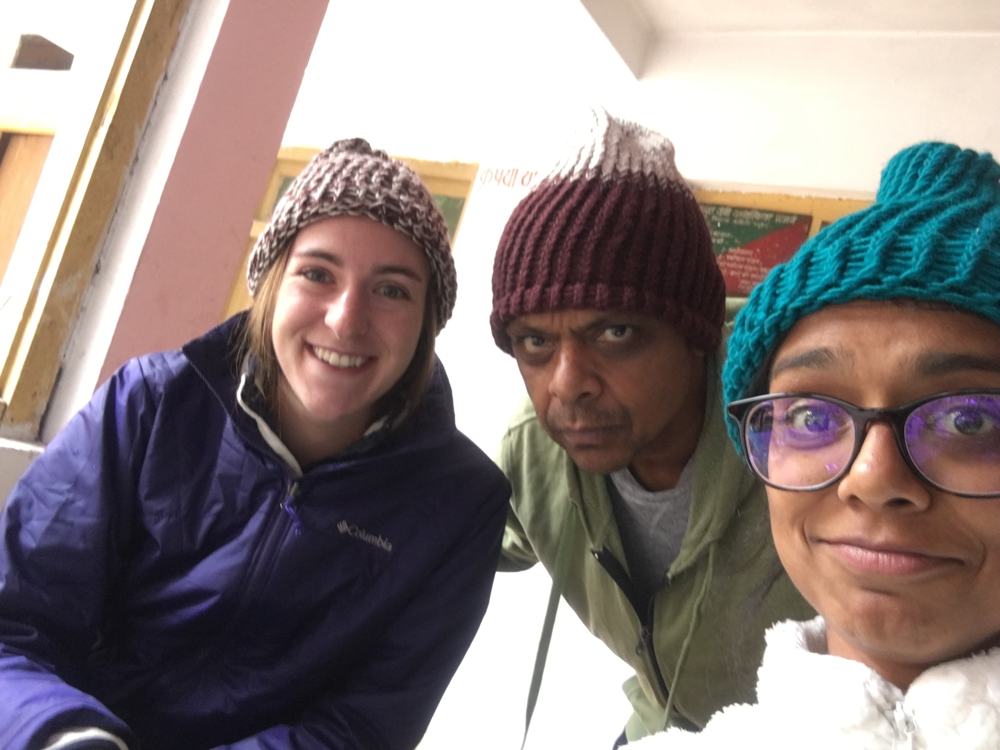
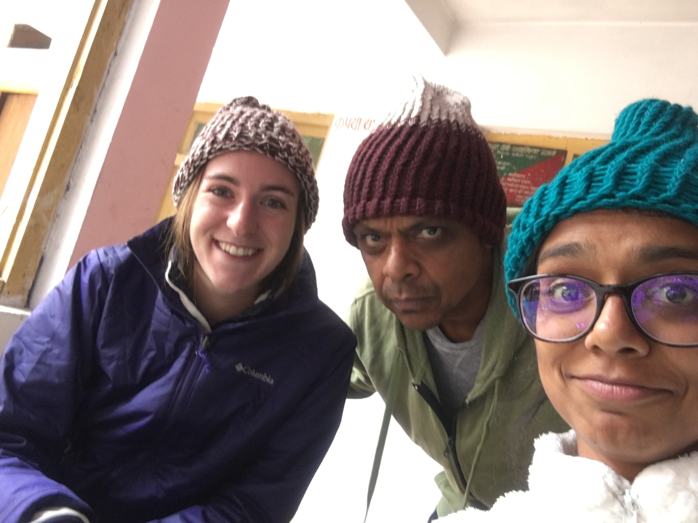

A Wet Himalayan Trek, 2018
Aug 20 -- 5 hours' drive from New Delhi to the foothills in Uttarakhand
At LachhmanJhula

Monkeys!

Crossing the bridge...

Shock and Awe of dipping into the ice-cold water!
Warming up with excellent coffee at a hip cafe called Chatsang
Aug 21 -- driving up towards Joshimath


After 8 hours' drive from LachhmanJhula we reached Joshimath.
Abandoned by our hAngry driver, Sonu,
waiting indefinitely for our guide, Hari,
we looked in Google Maps for a restaurant nearby for lunch.
Apparently there was one called Airbus Cafe.
We eventually found it. It was a bus indeed. And closed.

Aug 22 -- half-hour drive from Joshimath to Govind Ghat.
Then a 12km hike up to Ghangriya.
Breakfast: Fresh hot instant noodles with tomato and onion.


Dinner at Ghangria

View from the hotel

Aug 23 -- on to the Valley of Flowers (ignoring the horses for rent)
 



Aug 26 -- horse back ride to Hem Kund Sahib and back (sorry, no pictures)!
Favorite food of the entire trip!

Aug 25 -- hiked back to Ghangria and then drove to Joshimath.
Plans of visiting Mana and the hotspring in Badrinath were canceled due to landslide road closure.
Aug 26 -- drove to Rishikesh, an 8 hour journey punctuated by 5 stops at landslides intp 12.5 hours.


At Ganga Resort in Rishikesh (part of Garwal Mandal Vikas Nigam a.k.a. JimVan)


Aug 27 -- drove back to New Delhi